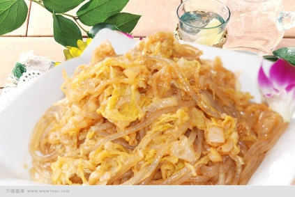
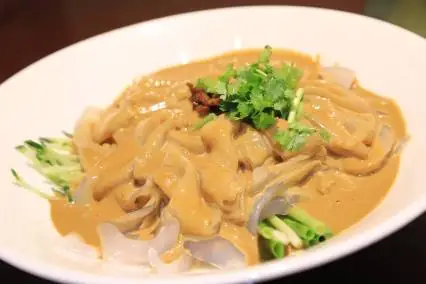

東北料理の世界
東北料理は中国東北部の厳しい寒さと豊かな自然が育んだ、独自の温かみのある食文化を持っています。冬の保存食文化から生まれた酸菜（発酵白菜）や、じっくり煮込んだ豪快な肉料理など、素朴でありながらコク深い味わいが多くの人々に愛されています。
代表的な料理
酸菜
中国東北部の伝統的な白菜の塩漬け発酵食品です。酸味が強く、鍋料理や豚肉との炒め物に欠かせない味わい深い食材です。

鍋包肉薄切りの豚肉に片栗粉をつけてカリッと揚げ、甘酸っぱいタレを絡めた料理です。外はサクサク、中はジューシーで子どもから大人まで大人気です。
 東北乱炖
東北乱炖豚肉、ジャガイモ、ナス、インゲンなど多彩な季節の野菜や肉を一緒に煮込んだ郷土料理です。具だくさんで体が温まる、家庭的な味わいが魅力です。
 地三鮮
地三鮮ジャガイモ、ナス、ピーマンの「大地がもたらす3つの新鮮な野菜」を油で揚げて炒め合わせた定番料理です。特製醤油ダレがしっかり絡み、ご飯が進む一品です。
 東北大拉皮
東北大拉皮じゃがいも澱粉で作られた幅広でもちもちとした春雨の冷菜です。特製のピリ辛ごまダレやニンニクダレとよく混ぜて、ツルッとした食感を楽しめます。

糖葫芦サンザシなどの果物を竹串に刺し、熱い砂糖シロップでコーティングした伝統的なお菓子です。パリッとした甘い飴と中の甘酸っぱい果実のコンビネーションが絶妙です。
 抜絲
抜絲サツマイモやリンゴを油で揚げ、熱した飴を絡めて素早く仕上げた伝統的な飴炊き料理です。出来立ての熱々を水に浸すと、糸を引く飴の演出も楽しめます。

味の特徴
東北地方の味付けは濃いめで塩気が強く、鍋料理や煮込み料理が多いのが特徴です。ニンニクや大豆味噌をよく使用し、冬に体を温める知恵が詰まっています。
料理の歴史
東北料理の形成は1930年代に遡ります。溥儀の宮廷料理人による山東料理や宮廷料理、満州族の伝統的な狩猟・煮込み文化、朝鮮族やロシア料理の影響を取り入れ、豊かな融合料理へと進化しました。
小吃の紹介
烤冷面
鉄板の上で冷麺の麺を広げ、卵やハム、パクチーをのせて特製甘辛ダレで焼いたもの。

老虎菜
パクチーや青唐辛子、ネギを和えた、ピリ辛でさっぱりしたサラダ感覚の冷菜。

豚皮焼き
コラーゲンたっぷりの豚皮を香ばしく炭火で焼き、スパイスをまぶしたもの。